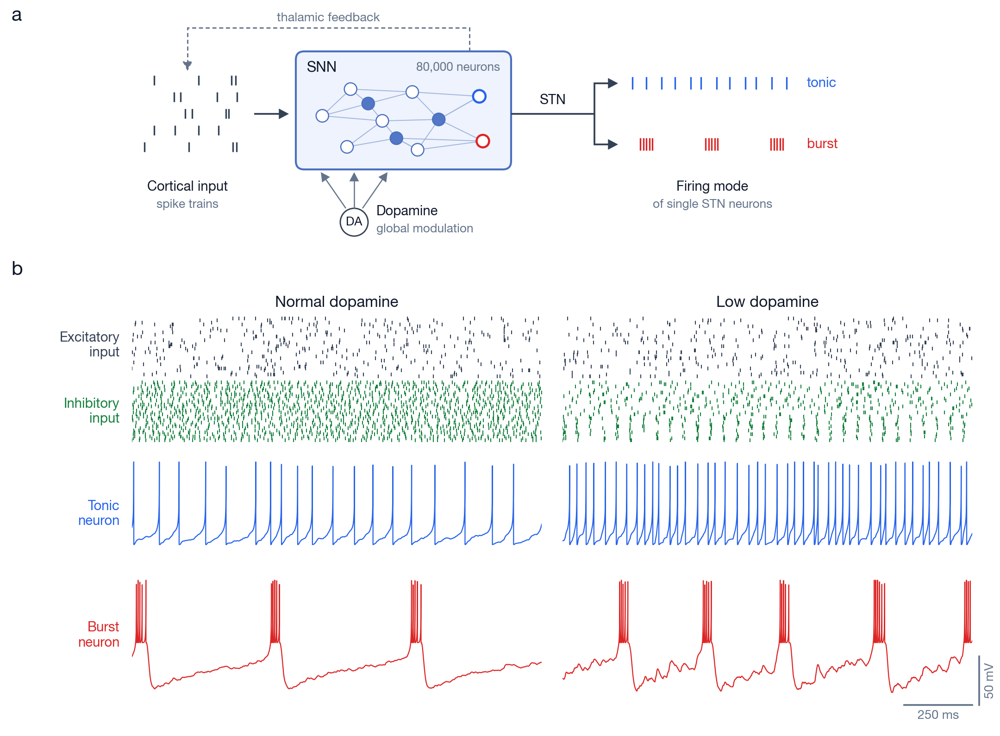
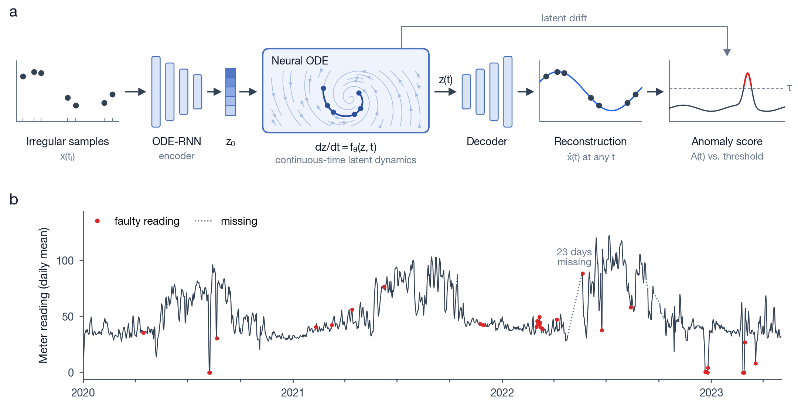
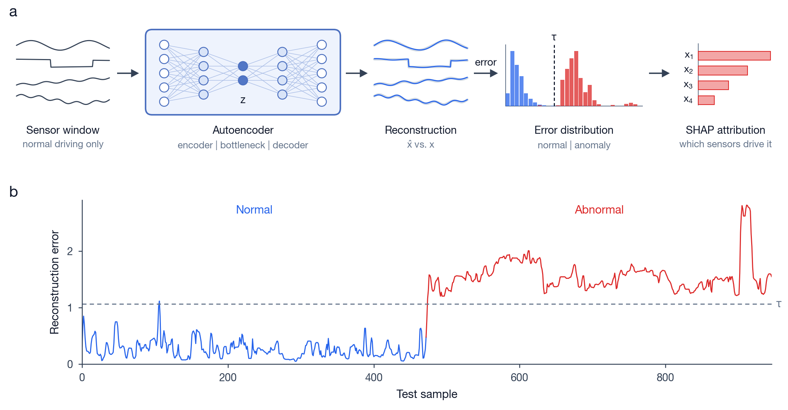

- Developed a detection pipeline that combines Whisper-based speech transcription with LLM-based analysis to identify AI-generated speech.
- Designed an integrated speech–language analysis framework to make detection reliable across diverse audio inputs.
Jieun Kim
I want my research to produce practical results that genuinely help people, by building AI that can take on tasks that only humans can do today.
Today’s AI is remarkably good at tasks such as image pattern analysis and object classification, yet it still fails at many things people do with ease. I am pursuing two questions: what would it take for AI to perform tasks that only humans can do, and how do humans and AI work differently, such that humans can still do more? Both grew out of my applied projects, where I kept asking why a model made the judgment it did.
So far I have approached them from both sides. To understand how the brain processes information, I built a large-scale spiking neural network of a brain circuit at the Korea Institute of Science and Technology (KIST) with Dr. Taegon Kim. To understand how machines learn from imperfect real-world data, I developed continuous-time Neural ODE models for unlabeled, irregularly sampled sensor data at the Georgia Institute of Technology, and a distribution-based Transformer for missing-value imputation in my Master’s thesis at Korea University.
I received my M.S. in Industrial and Management Engineering from Korea University (advisor: Prof. Jun-Geol Baek) and my B.S. in Statistics and Computer Science from Sookmyung Women’s University (advisor: Prof. Young-Geun Choi).
Human–AI Complementarity
Human vs. Machine Information Processing
Learning from Incomplete Real-World Data
Trustworthy AI
Computational Neural Modeling
Research & Publications
Two sides of the same question: how the brain processes information, and how machines learn from imperfect real-world data
Korea Institute of Science and Technology (KIST)
Research Intern · Advisor: Dr. Taegon Kim
May 2024 – Jan 2026
Project ongoing
Why
To understand how the brain itself processes information, the human side of my research question, I modeled one of the circuits the brain uses to make decisions: the cortico-basal ganglia loop, which selects one action among competing inputs. I built it as a spiking neural network, a recurrent network whose units communicate through discrete spikes rather than continuous activations.
Model
- 80,000 spiking neurons in seven populations, connected by excitatory and inhibitory synapses into a recurrent loop with cortical input and thalamic feedback (Brian2).
- Two spiking neuron models (adaptive exponential and quadratic integrate-and-fire); subthalamic neurons are split into tonic- and burst-firing types.
- Topographic wiring into motor, associative and limbic modules; dopamine acts as a global signal that rescales excitability and synaptic strength.
What I found (SfN 2025)
- Wiring shapes information flow: topographic connections keep activity within functional modules, while randomly mixed wiring spreads synchrony across the whole network.
- Firing mode shapes responses: when subthalamic neurons fire in bursts, cortical responses to a motor stimulus become faster and more variable, a more flexible state rather than noise.
- Lowering dopamine pushes neurons toward burst firing unevenly across modules and increases network-wide β synchrony.
Ongoing: what switches a single neuron between tonic and burst firing, a context-dependent change of coding mode that standard artificial neurons do not have.

Georgia Institute of Technology
Visiting Researcher · Advisor: Prof. Jungho Lewe
Problem
Campus building sensor streams arrive unlabeled and irregularly sampled, with multi-day outages and meter glitches. Standard sequence models assume a regular time grid, so these gaps usually have to be imputed first.
Approach
- Continuous-time latent model (ODE-RNN encoder, Neural ODE, decoder) that reads observations at their actual timestamps, without imputation.
- Unsupervised anomaly score combining reconstruction error with the drift of the latent trajectory.
- Physics-informed inputs from chilled-water telemetry: supply–return temperature difference and heat-flow ratio.

Korea University
Graduate Researcher · Advisor: Prof. Jun-Geol Baek
Focus
Learning robust temporal representations from noisy and incomplete sequential data, and turning them into maintenance decisions for industrial and vehicle systems.
Work
- Distribution-based Transformer for time-series missing-value imputation (Master’s thesis).
- Multiple-encoder framework for multivariate time-series anomaly detection under varying normality conditions.
- Remaining Useful Life (RUL) estimation from high-dimensional vehicle telemetry and operational logs.
- Causal inference and statistical analysis to identify critical failure variables and operational vulnerabilities.
Sookmyung Women’s University
Undergraduate Research Intern
Breast cancer subtyping
Neural network models on multi-omics gene expression data to classify heterogeneous breast cancer subtypes (Journal of KIISE, 2020).
COVID-19 epidemiology
Parametric survival modeling and statistical analysis of COVID-19 clinical records to investigate epidemiological risk factors (Korean Journal of Applied Statistics, 2020).
Publications
Master's Thesis
A distribution-based transformer framework for time series missing value imputation
Master's Thesis, Korea University, Department of Industrial and Management Engineering, 2023
Masks contiguous segments of a series and trains a Transformer to reconstruct them against targets drawn from the distribution of surrounding observations, so it can learn even when segments are already missing. Evaluated on ECG200, Siemens pump sensors, and DodgerLoopGame.
Journal Publication
Statistical analysis of estimating incubation period distribution and case fatality rate of COVID-19
The Korean Journal of Applied Statistics, 2020
Journal Publication
Breast Cancer Subtype Classification Using Multi-omics Data Integration Based on Neural Network
Journal of KIISE, 2020
Presentations
SfN 2025
Topographic Cortico-Basal Ganglia Computational Model Reveals Motor and Non-motor Symptom Comorbidity in Parkinson’s disease
Society for Neuroscience (SfN), 2025
KSBNS 2025
Computational Cortico-Basal Ganglia Model Reveals Altered Spiking Dynamics and Synchronization in Parkinson’s disease
The Korean Society for Brain and Neural Sciences (KSBNS), 2025
KSBNS 2024
Spiking Neural Network Modeling of Basal Ganglia for Parkinson’s disease Prognosis and Adaptive DBS
The Korean Society for Brain and Neural Sciences (KSBNS), 2024
KIIE 2022
Fuel Cell Vehicle Fuel Efficiency Prediction via Data Refinement and Adversarial Generation
Korean Institute of Industrial Engineers, 2022
Projects
Detecting AI-generated speech, and anomaly detection and predictive maintenance on industrial sensor data
- Goal: detect ion-filter anomalies in hydrogen fuel-cell vehicles from in-drive sensor data.
- Data: 386,842 observations, of which only 620 (0.16%) are abnormal.
- Model: one-class autoencoder trained only on normal driving data; held-out normal and abnormal data are scored by reconstruction error.
- Explanation: SHAP attributions identified pressure and temperature variables as the main drivers of abnormal scores.

- Data: real multivariate sensor time series collected by the company from industrial pumps in operation, recorded until failure, so sequence length differs from pump to pump.
- Model: LSTM-autoencoder health index calibrated on the first 30% of each run, so pumps with different lifetimes are monitored on a single scale.
- Output: three-level (normal/warning/alarm) alerts that maintenance staff can act on directly.
Teaching & Awards
Corporate instruction, university teaching, academic service and awards
Spring 2022 – Dec 2023
Developed and delivered machine learning and programming curricula for industry practitioners at major enterprise partners:
Samsung Electronics
LG Energy Solution
LG Electronics
SK Hynix
Hyundai Steel
Teaching Assistant – Korea University
- IDS505: Data Science & AI ProgrammingSpring 2022
- IDS508: Principles and Applications of Machine LearningFall 2022
Academic Service
- Journal Reviewer: Journal of Imaging Science and Technology2023
- Book Reviewer: Insights from Kaggle Medalists2023
Awards & Honors
- 2022Special Prize, Weather Big Data Contest
- 2021Grand Prize, Data-based Service Contest for Workplace Safety AI
- 2021Third Prize, Contest for Natural and Artificially Generated Data
- 2020Best Paper Award, Korean Institute of Information Scientists and Engineers (KIISE)
Technical Skills
Programming languages, scientific tools, and neural simulation frameworks
Programming Languages
Python
PyTorch
TensorFlow
Brian2 (SNN Simulator)
R
Tools & Frameworks
Git
LaTeX
Tableau
Matplotlib